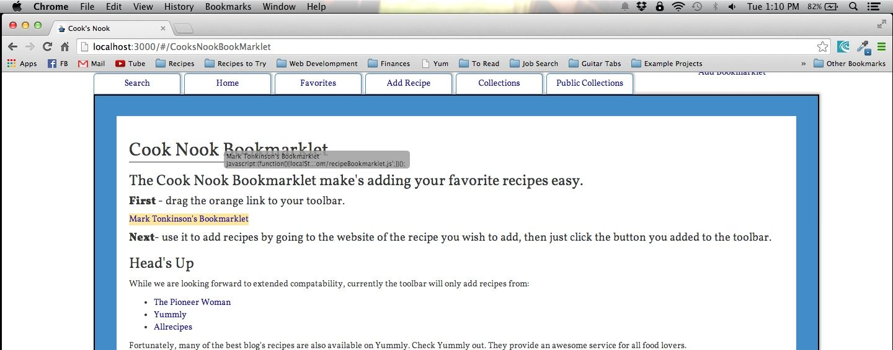
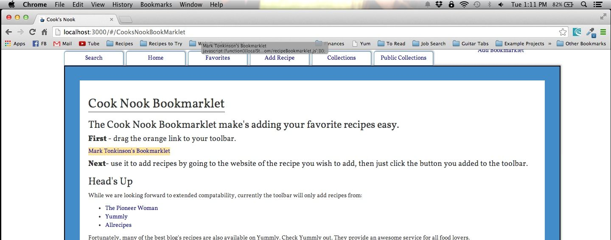

<div class="viewer container">
	<div class="row collection-view">

		<h2><u>Cook Nook Bookmarklet</u></h2>
		<h3>The Cook Nook Bookmarklet make's adding your favorite recipes easy.</h3>

		<h4><strong>First</strong> - drag this orange link to your toolbar.</h4>
		
			<p><a class="bookmarklet" draggable="true" href="javascript:(function(){localStorage.setItem('local',JSON.stringify('{{user._id}}'));document.body.appendChild(document.createElement('script')).src='http://cooknookcollection.com/recipeBookmarklet.js';})();">{{user.userName}}'s Bookmarklet</a><p>
			
			<p></p>
<!-- 			<div class="text-center">
				
				<br></br>
				
				
				<br></br>
				
				

				<br></br>
			</div> -->
			

		<h4><strong>Next</strong>- use it to add recipes by going to the website of the recipe you wish to add, then just click the button you added to the toolbar.</h4>

		<h3>Head's Up</h3>
		<p>While we are looking forward to extended compatability, right now the toolbar will only add recipes from: </p>
		<ul>
			<li><a href="http://www.allrecipes.com" target="_blank">Allrecipes</a></li>
			<li><a href="http://www.yummly.com" target="_blank">Yummly</a></li>
			<li><a href="http://www.foodnetwork.com" target="_blank">Food Network</a></li>
			<li><a href="http://www.thepioneerwoman.com" target="_blank">The Pioneer Woman</a></li>
		</ul>
		<p>Fortunately, many of the best blog's recipes are also available on Yummly.  Check Yummly out. They provide an awesome service for all food lovers. </p>


	</div>
</div>